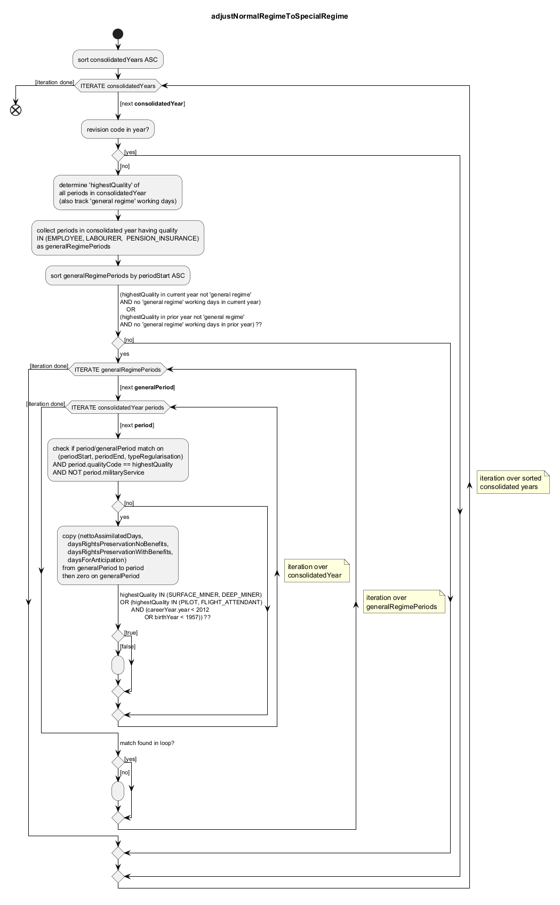

@startuml
skinparam activity {
/'BackgroundColor Yellow'/
BorderColor black
ArrowColor black
}
skinparam shadowing false
/'skinparam backgroundColor white/PaleGreen '/
title adjustNormalRegimeToSpecialRegime
start
:sort consolidatedYears ASC;
while (ITERATE consolidatedYears) is (\n[next <b>consolidatedYear</b>])
floating note right: iteration over sorted\nconsolidated years
:revision code in year?;
if () then ([no])
:determine 'highestQuality' of\nall periods in consolidatedYear\n(also track 'general regime' working days);
:collect periods in consolidated year having quality\nIN (EMPLOYEE, LABOURER, PENSION_INSURANCE)\nas generalRegimePeriods;
:sort generalRegimePeriods by periodStart ASC;
-> <U+0028>highestQuality in current year not 'general regime'\nAND no 'general regime' working days in current year<U+0029>\n OR\n<U+0028>highestQuality in prior year not 'general regime'\nAND no 'general regime' working days in prior year<U+0029> ??;
if () then (yes)
while (ITERATE generalRegimePeriods) is (\n[next <b>generalPeriod</b>])
floating note right: iteration over\ngeneralRegimePeriods
while (ITERATE consolidatedYear periods) is (\n[next <b>period</b>])
floating note right: iteration over\nconsolidatedYear
:check if period/generalPeriod match on\n <U+0028>periodStart, periodEnd, typeRegularisation<U+0029>\nAND period.qualityCode == highestQuality\nAND NOT period.militaryService;
if () then (yes)
:copy <U+0028>nettoAssimilatedDays,\n daysRightsPreservationNoBenefits,\n daysRightsPreservationWithBenefits,\n daysForAnticipation<U+0029>\nfrom generalPeriod to period\nthen zero on generalPeriod;
-> highestQuality IN <U+0028>SURFACE_MINER, DEEP_MINER<U+0029>\nOR <U+0028>highestQuality IN <U+0028>PILOT, FLIGHT_ATTENDANT<U+0029>\n AND <U+0028>careerYear.year < 2012\n OR birthYear < 1957<U+0029><U+0029> ??;
if () then ([false])
:;
else ([true])
endif
else ([no])
endif
endwhile ([iteration done])
-> match found in loop?;
if () then ([no])
:;
else ([yes])
endif
endwhile ([iteration done])
else ([no])
endif
else ([yes])
endif
endwhile ([iteration done])
end
@enduml